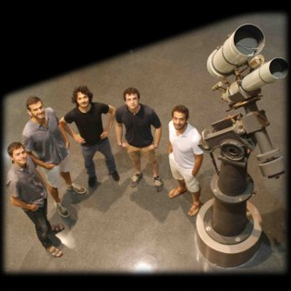

Durant l’edat mitjana, l’educació superior es va construïr al voltant del Trívium i el Quadrívium:
- El Trívium, comprenia la gramàtica, la dialèctica i la retòrica, i servia per cultivar l’eloqüència.
- El Quadrívium desenvolupava el pensament científic i estava format per les disciplines relacionades amb les matemàtiques seguint la divisió pitagòrica: aritmètica, geometria, astronomia i música.
El conjunt d’aquestes disciplines establien les anomenades set arts liberals. Avui dia, en ple segle XXI, Quadrívium és per a nosaltres una manera diferent d’apropar les ciències pures a tothom, perquè volem compartir allò que ens apassiona i perquè creiem que una educació científica és més necessària que mai en un món cada vegada més dominat per la tecnologia.
Història
Quadrívium neix la tardor de 2013 gràcies a un grapat d’estudiants de doctorat, cadascun amb els seus propis projectes de divulgació científica. Tot i que ha estat lent, el creixement de Quadrívium no s’ha aturat des d’aleshores. Sota el paraigües de Quadrívium s’han realitzat més de 100 xerrades i tallers a escoles, biblioteques públiques i centres cívics arreu de Catalunya. El 2015, i després de molts esforços, Quadrívium es constitueix oficialment com a associació sense ànim de lucre.
Objectiu
L’objectiu de Quadrívium és divulgar la ciència combinant rigor i passió, amb l’ambició de transmetre de forma amena i divertida des dels conceptes més consolidats fins als descobriments més recents i la investigació més avantguardista.
Des de Quadrívium creiem fermament que la societat s’ha d’involucrar més en el coneixement científic. No es tracta de buscar un coneixement especialitzat, sinó de difondre nocions d’aquells principis científics més importants que ens afecten cada dia per aconseguir una societat més crítica i més informada. També creiem que a nivell personal tothom pot gaudir del coneixement científic més punter, defugint del tòpic que és difícil d’entendre i fent-lo accessible a tothom.
Estil
- Rigorós > Fem divulgació de qualitat. Treballem sempre amb continguts basats en fets contrastables, ben coneguts i ben documentats. No ens cal recórrer a la pèrdua de rigor per tal d’oferir una imatge més amigable de la ciència. A Quadrívium fem ciència de debò!
- Expert > El nostre equip està format per joves científics que es dediquen en cos i ànima a la recerca i que alhora tenen una àmplia experiència en l’ensenyament i la divulgació. Tenim un llarg historial de docència a nivell secundari i universitari, i acumulem multitud d’activitats organitzades en escoles, instituts, biblioteques i centres cívics de tot Catalunya.
- Actual > Ens esforcem per estar sempre a l’última. Creiem que no n’hi ha prou en explicar les bases més fonamentals de la ciència; és important també saber-les relacionar amb els esdeveniments més recents que hagin pogut transcendir als mitjans de comunicació, per donar una visió global i, sobretot, actualitzada del significat de fer ciència.
- Jove > Som un equip jove, i creiem que això dóna a les nostres activitats un caire més amè i dinàmic, amb un llenguatge senzill i clar. No ens fan por les noves tecnologies ni les noves metodologies pedagògiques, si bé creiem que en el fons el més important és la passió per transmetre allò que estimem: la ciència.
- Proper > Sempre oferim un tracte personal i amigable, ja que creiem que la proximitat és essencial per assolir el nostre objectiu. Transmetem conceptes complexos fent servir explicacions senzilles i algun experiment. En cas que quedin dubtes, estem disposats a intentar-ho tantes vegades com faci falta! Ens encanta plantejar preguntes per estimular la curiositat dels participants. I és que no hi ha ciència sense curiositat, i no hi ha curiositat sense preguntes.
Activitats
Organitzem xerrades i tallers on tractem una gran varietat de temàtiques de l’àmbit científic. La majoria de les nostres activitats estan específicament dissenyades per adaptar-se als currículums docents d’ESO i Batxillerat, posant especial èmfasi en les assignatures de Física, Matemàtiques, Biologia i Ciències per al Món Contemporani. En aquestes activitats exposem part del temari d’aquestes assignatures des d’un punt de vista diferent al de les classes del dia a dia, buscant sempre estimular la curiositat de l’alumnat i generar debat. Així mateix, qualsevol de les nostres xerrades i tallers s’adequa perfectament al públic general, independentment del seu perfil.
També col·laborem de manera periòdica amb alguns dels centres cívics més importants de la ciutat de Barcelona. Actualment impartint cursos trimestrals al Centre Cívic Casa Golferichs i al Centre Cívic Casa Elizalde.